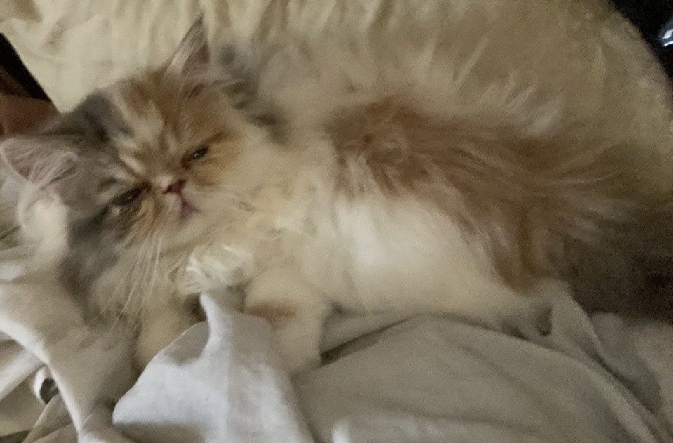
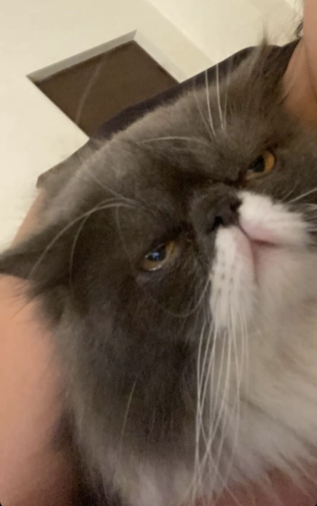
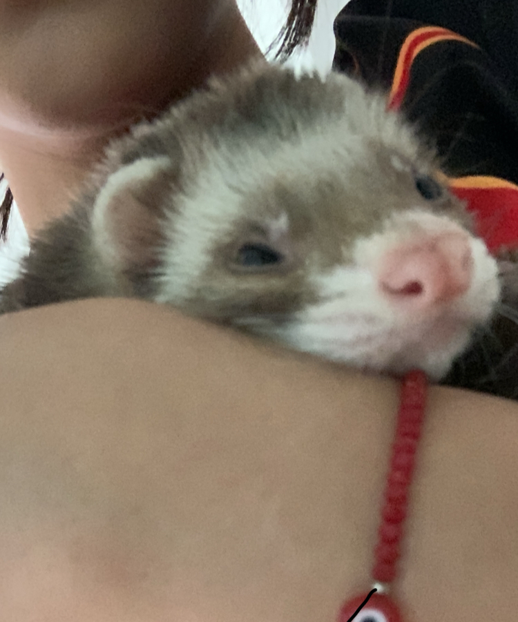

Mis mascotas
Yo Caro soy una amante de los animales, he tenido muchos perros y actuakmente tengo gatos y perros, pero tambien he tenido mascotas no tan agradables para muchas personas, he tenido serpiertes y una tarantula. Tuve un huron que fallecio hace un año y se llamaba timothee Chalamet pero le decia Timmy. Tuve conejos y peces. A mi me gustan casi todos los anim ales, mi abuelo en su quinta tenia muchas especies de pajaros, tenia gallinas, pavos reales, guajolotes, gallinas blancas peludas, patos, ganzos , coquenas, creo tambien ninfas y borregos. Tenia incubadoras y tenia los polluelos y me los prestaba para cuidarlos.
Algunos de mis gatos
 Mi huron
Encuesta
Esta es una pequeña encuesta, si prefieres gatos o perros